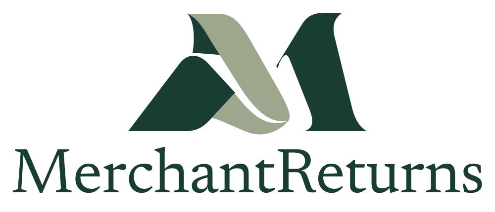

Folded ribbon forms, an editorial wordmark and a forest, sage and ivory palette. Editable SVG paths with outlined lettering. No external fonts required.



SVGICOApple touch icon512px app iconSocial share image